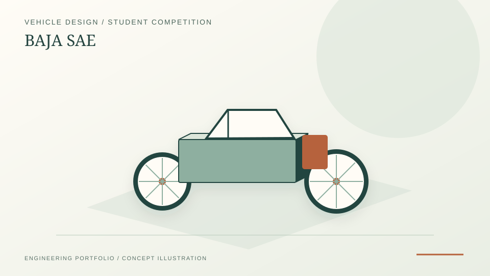

Engine and transmission team role in an SAEINDIA off-road vehicle competition context.
SAEINDIA · Vehicle systems · Engine and transmission
BAJA SAE 2019
Early off-road vehicle team experience in engine and transmission work, kept as concise supporting evidence for mechanical foundations rather than a current headline track.
Engine systemsTransmissionAutomotive designTeam documentation

PROJECT REFERENCE / BAJA-SAE-2019Kept as early vehicle-systems evidence rather than a current target-role headline.
What this page is
This is a short evidence page for early mechanical-team experience. It should not distract from the stronger current positioning in thermal-fluid engineering, energy systems modelling and industrial decarbonisation.
Contribution area
- Supported engine and transmission work within a multidisciplinary vehicle competition team.
- Built familiarity with drivetrain packaging, team documentation and competition constraints.
- Provided a foundation for later mechanical design work in tractor and bicycle competition projects.
What I learned
- Multidisciplinary handoff: understanding where the engine subsystem stops and where chassis/suspension/electrical begin, and the documentation that lets one team consume another's output.
- Constraint reasoning: BAJA SAE has an unmodifiable single-cylinder engine — design effort focuses on the transmission, CVT tuning, drivetrain packaging and weight distribution rather than on engine modification.
- Field validation: an off-road endurance event is a different kind of test from a lab — it forces the team to think about failure modes (heat soak, vibration, dust ingress) that don't appear in CAD.
Limitations
The portfolio keeps this concise because the strongest documented evidence for early vehicle design is in the tractor and bicycle design reports. BAJA remains relevant mainly as team-based mechanical background — the underlying mechanical and systems-thinking foundation transferred into later CFD/CHT work, but it is not itself a current-positioning headline.